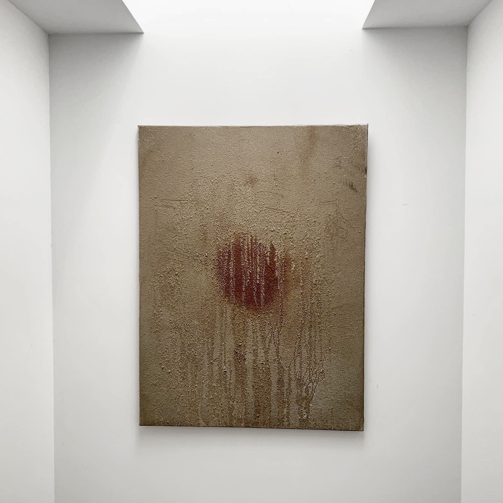
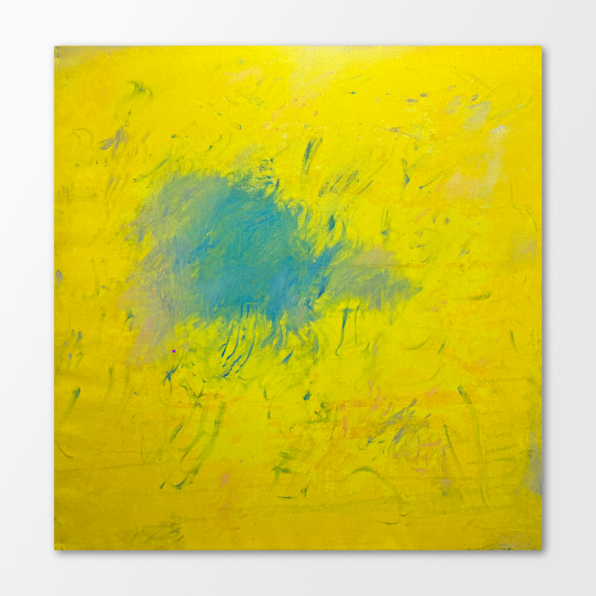
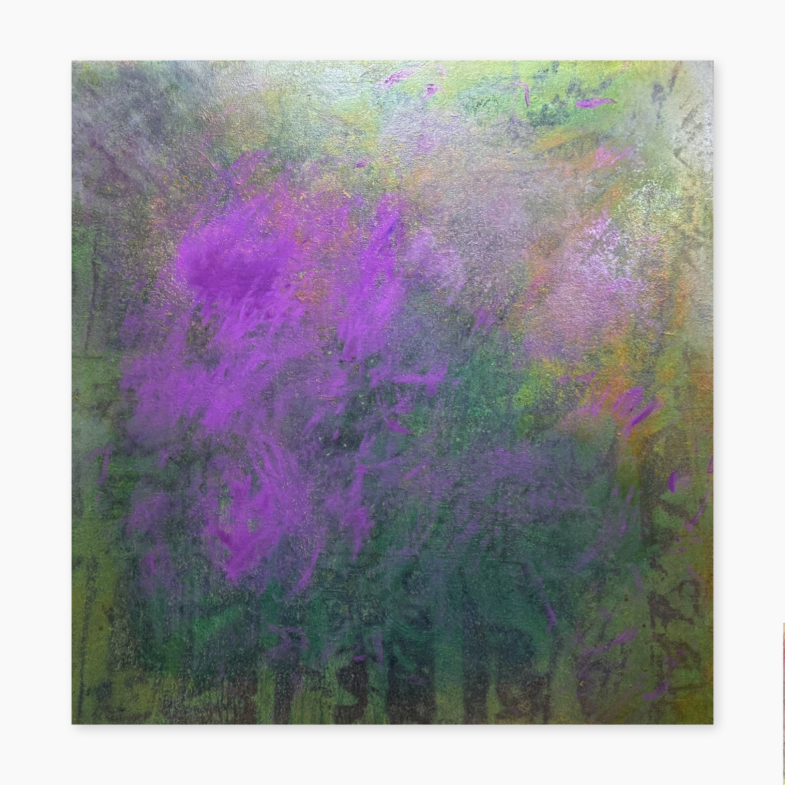

Cartografías de la Conciencia


Exploraciones 3D
Error al cargar el modelo 3D.
Abstracción Volumétrica I
Error al cargar el modelo 3D.
Geometría Orgánica II
Error al cargar el modelo 3D.
Estructura Fluida III
Cada modelo 3D es una investigación sobre la forma y el volumen, fusionando la estética del arte plástico con las posibilidades de la fabricación digital.